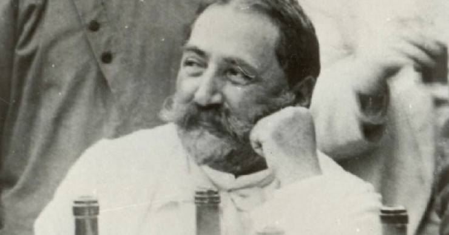

Ilia Chavchavadze
The man who reinvented Georgia

Ilia at his house in Saguramo
Events from Ilias life
- 1837 Born in Qvareli
- 1848-1851 Studying in elementary school
- 1851-1853 Studying in Gymnasium
- 1857-1861 Student years at the University of St. Petersburg
- 1861 Returning to Georgia
- 1861 Founded periodical Sakartvelos Moambe
- 1863 Married Olga Guramishvili
- 1864 Working as an official of the Governor-General of Kutaisi, in connection with the implementation of peasant reform - as a mediator in Eastern Georgia
- 1868—1873 He worked as a conciliation judge in Dusheti district, Eastern Georgia
- 1874 Founder and chairman of The Bank of the Nobility
- 1879—1885 Chairman of Society for the Spreading of Literacy Among Georgians
- 1877 Founded the progressive periodical Iveria
- 1906 Elected as a member of the State Council (Gosudarstvennaya Duma) in Russia
- 1907 Murdered by a gang of six assassins who ambushed him and his wife Olga while traveling from Tbilisi to Saguramo
... you can find out more about this person in this
article